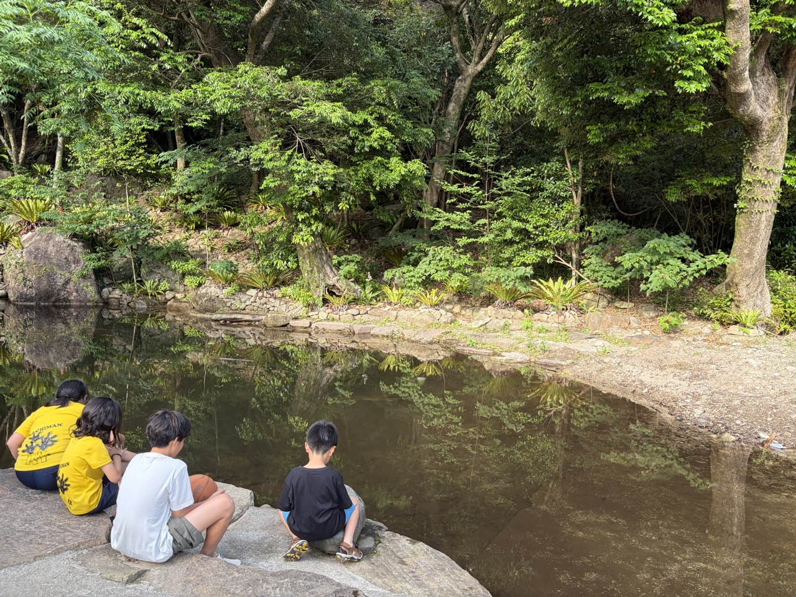
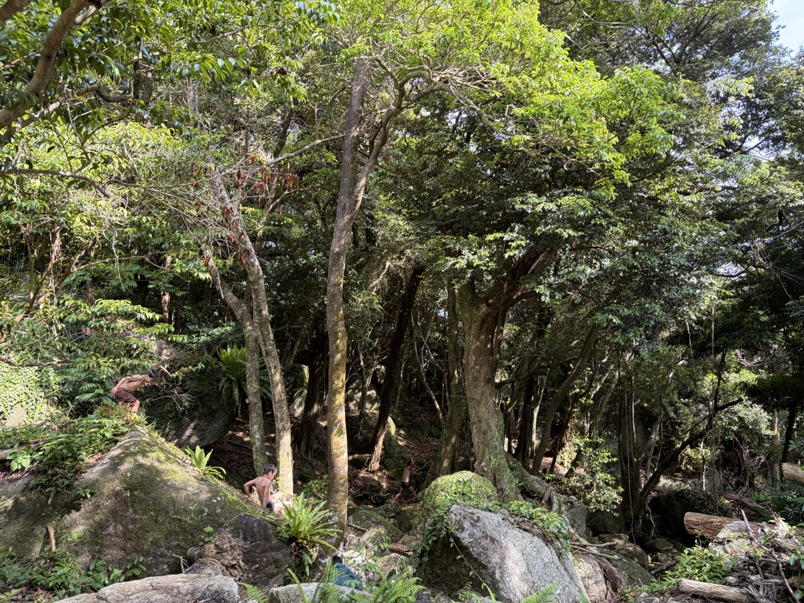
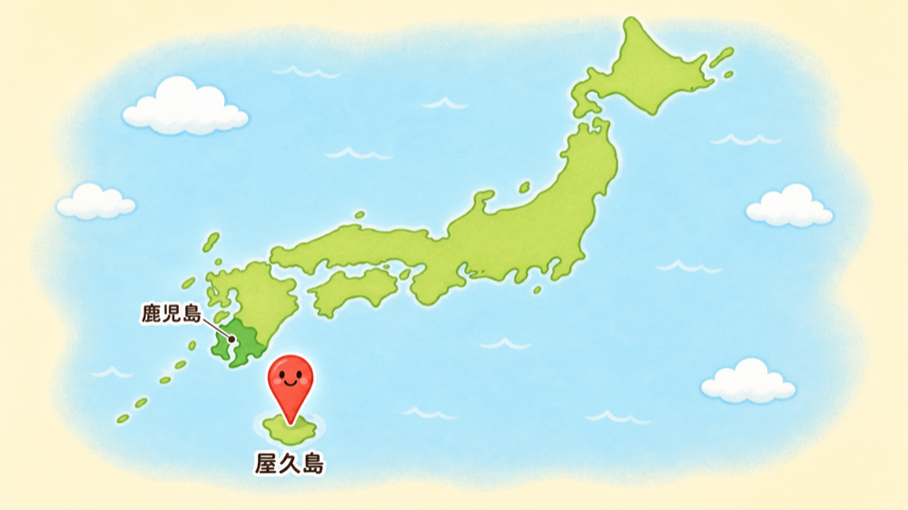
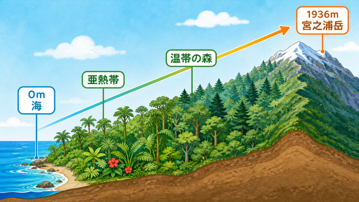
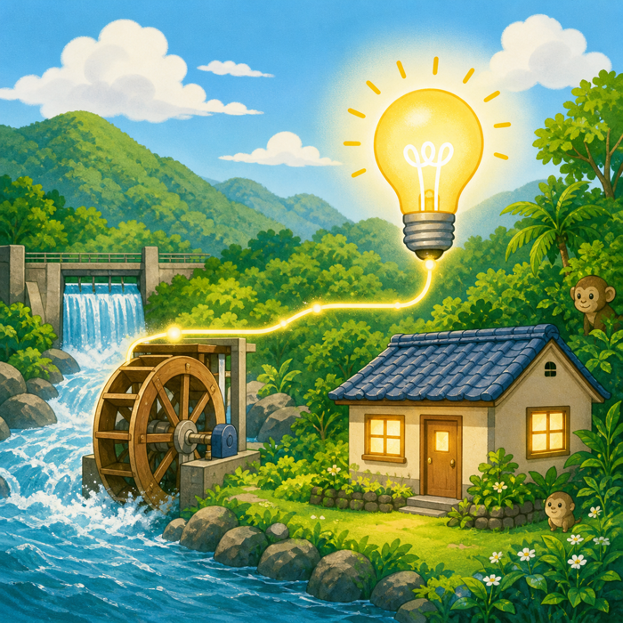
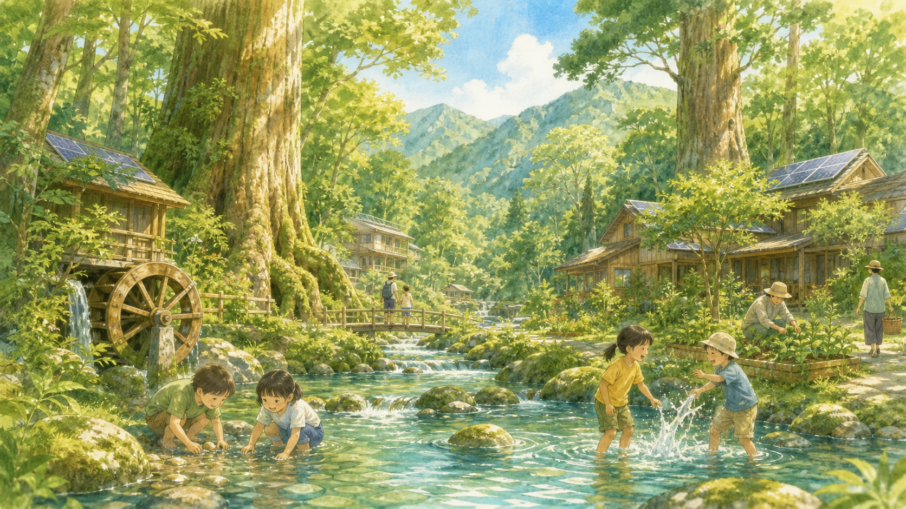

🌲 未来ポケット × 屋久島 ／ 第 2 回
わたしたちの街の
「憲章」
を
つくろう！
2026 ／ 6 ／ 23（火） 18:00 - 18:50 全2回シリーズ・最終回
📜 約束をつくる
💭 みんなで考える
🌲 屋久島とつなぐ
渡邉 匠
（ちげ）
「ちげ」って呼んでね！
もう一度、自己紹介
今日も屋久島から
お話しします。
🏫
元高校教師（英語・情報）10年
🏔️
カナダ・ロッキー山脈でガイド
🌲
屋久島で教育旅行・探究旅行をつくる
🌞
👋
RE: HELLO 👋
おかえり！
1週間ぶり 🎉
「宿題できた人〜？」
「今日も元気？」
▶ チャットで合図してね（スタンプでもOK！）


思い出しタイム
1週間前のこと、目を閉じて思い出してみよう。
前回、何したっけ？
覚えている言葉を、ひとつ教えて！
前回の旅を、30秒で！
こんなことを一緒に見つけたね。
① 島の放課後
川や森が、遊び場になる。
② 自然と暮らし
雨・山・森・水がつながる。
📜
③ 屋久島憲章
大切なものを守る「約束」。
そして宿題は、自分の街の「大切」を探すこと。
屋久島の基礎知識
まず、この4つを思い出そう。
場所 → 雨 → 山 → 水の力
ぜんぶ、つながっている！

① 鹿児島県の南
② 雨が多い
「月に35日雨」と言われるほど。

③ 山が高い
最高峰・宮之浦岳は1936m。

④ 水で電気
島の電気のほとんどが水力発電。
イメージ
🎮 おさらいクイズ！
先週ぶりの記憶テスト — 全 3 問
屋久島のこと、どれくらい覚えてる？
Q.01
屋久島って、
どこにある？
A.
鹿児島県の南、海の上にぽっかり浮かぶ島！
Q.02
世界遺産
3冠
！
その3つは？
A.
世界自然遺産・
ユネスコエコパーク・
ラムサール条約湿地
Q.03
屋久島の電気、
何でつくってる？
A.
ほぼ100％、川の水！💧（水力発電）
※覚えてなくても全然OK！思い出すきっかけにしよ 🌿
🗺 TODAY'S FLOW
今日の流れ
— 50 min
STEP ①
0 - 10 min
📝
宿題発表
タイム
STEP ②
10 - 20 min
💭
なぜ大切？
を深める
STEP ③
20 - 35 min
✍️
憲章を
つくる
STEP ④
35 - 45 min
🎤
発表・
まとめ
ゆっくりでいいよ。途中でトイレ・水分OK 💧
HOMEWORK ✏️
先週の宿題、覚えてる？
MISSION
自分の街で
「大切にしたいもの」
を、ひとつ。
どんな形でOK ↓
📷
写真
スマホでパシャ
✏️
絵
うまくなくてOK
💬
言葉
一言でも◎
▶ 準備できた人から発表しよう！
🎤 FOR THE SPEAKER
発表してくれる人へ
この3つだけ伝えればOK！
①
なに
見つけた「大切」は
どんなもの？
②
どこ
それは街のどのへんに
あるのかな？
③
なんで
どうして
大切なんだろう？
うまく話さなくてOK！
自分の言葉で大丈夫だよ 🌱
🎤 発表タイム
No.
1
📷
写真 / 絵 を ここに
（ファシリが当日差し替え）
NAME
さん
COMMENT
なに / どこ / なんで大切
を、ここに書き込もう。
🎤 発表タイム
No.
2
📷
写真 / 絵 を ここに
（ファシリが当日差し替え）
NAME
さん
COMMENT
なに / どこ / なんで大切
を、ここに書き込もう。
🎤 発表タイム
No.
3
📷
写真 / 絵 を ここに
（ファシリが当日差し替え）
NAME
さん
COMMENT
なに / どこ / なんで大切
を、ここに書き込もう。
EVERYONE'S "TAISETSU"
みんなの「大切」を、集めてみると…
ぜんぶ、
誰かの大切。
✏ 言葉を入力 (E)
PRESENTER ／ チャットの言葉を入力
改行 or カンマ区切りで貼り付け
キャンセル
適用する ✓
※ 入力はブラウザに保存されます ／ 空欄で「適用」するとデフォルトに戻ります
QUESTION 01 ／ ちょっと、想像してみて
もしそれが、
なくなったら
どうなる？
公園が消えたら？ お気に入りのお店が閉まったら？
毎日通る道が、ちがう道になったら？
▶ 思いついたら、チャットに書いてみよう
🌲 YAKUSHIMA
屋久島の人たちも、
同じこと
を考えた。
— だから「屋久島憲章」をつくった（覚えてる？）
💧
憲章 ①
水の環境を
守る
🌱
憲章 ②
子どもが
夢を持てる
地域に
⛩️
憲章 ③
歴史や伝統を
大切に
🌏
憲章 ④
世界の人と
交流する
失いたくない。
— だから、約束にした。
☁️
☁️
☁️
QUESTION 02 ／ ぐーんと、未来へ
100年後
も、
あってほしい？
みんなが大人になって、
その子どもが大人になって、
そのまた子どもが大人になっても。
100年前 ←→ 100年後
PAST · NOW · FUTURE
AI生成イメージ
100年前の屋久島（イメージ）
100 YEARS AGO
今

想像イメージ
100年後の屋久島（イメージ）
100 YEARS AHEAD
100年前の人が守ってくれたから、
今がある。
100年後の人に、
何を残せる？
💚 THE BEGINNING
守りたい気持ち
＝
約束のはじまり
気持ちが、ちょっとずつ、ことばになっていく
STEP 1
大切だなと
思う。
💭
→
STEP 2
ずっと
あってほしい。
✨
→
STEP 3
だから、
約束にする。
📜
これが
「憲章」
のはじまり。
📖 RECAP
おさらい：
屋久島憲章
これと同じように、自分たちの街でつくってみよう！
💧
YAKUSHIMA CHARTER ①
水の環境を守る
🌱
YAKUSHIMA CHARTER ②
子どもが夢を持てる地域に
⛩️
YAKUSHIMA CHARTER ③
歴史や伝統を大切にする
🌏
YAKUSHIMA CHARTER ④
世界の人と交流する
LET'S MAKE OURS
✍️ わたしたちも
約束をつくろう！
自分の街への、はじめての約束 ✨
ひとつでOK
いっぱい考えなくていい
短くてOK
一行でじゅうぶん
うまくなくてOK
自分の言葉が一番いい
📝 TEMPLATE
こんな書き方が、できるよ
〇〇に、自分の「大切」を入れてみよう
TEMPLATE ①
〇〇
な街にする
例：あったかい街にする
TEMPLATE ②
〇〇
を大切にする
例：あいさつを大切にする
TEMPLATE ③
〇〇
を守る
例：お祭りを守る
型はあくまでヒント。自由でいいよ 🌱
EXAMPLES ✨
たとえば、こんな憲章。
これを参考に、自分の言葉で書いてみよう！
🛝
公園で遊べる街にする
👋
近所の人とあいさつができる街を大切にする
🎆
お祭りを守る
🚶
みんなが安心して歩ける道を守る
QUIET TIME · 3 MIN
💭 考えてみよう
すーっ
03:00
▶ スタート（クリック / キー T）
✨
🌟
↘ TYPE IT IN CHAT
書けた人は、
チャットへ！💬
🧒
例：参加者さん
公園を大切にする街！
ひとつでOK
短くてOK
うまくなくてOK
👏
🌟
💚
🎤 みんなの憲章 発表タイム
ファシリが書き出してね
①
さん
②
さん
③
さん
④
さん
屋久島憲章と、みんなの憲章を
並べてみよう
YAKUSHIMA
屋久島憲章
①
水の環境を守る
②
子どもが夢を持てる地域に
③
歴史や伝統を大切に
④
世界の人と交流する
&
CROSS
OUR TOWN
みんなの憲章
①
公園で遊べる街にする
②
あいさつができる街を大切に
③
お祭りを守る
④
安心して歩ける道を守る
▶ 似ているところ、ある？
大切にしたい気持ちは、
屋久島も、みんなの街も、同じ 🌿
SINCE 1993 ／ FOR 30+ YEARS
1993年から、
ずっと。
イメージ
屋久島の自然・人の暮らし
屋久島の人は、
この約束を
30年以上
ずっと、
守り続けてきた。
みなさんは、
どうする？
今日つくった憲章を、明日からひとつでも意識してみよう ✨
FOR THE NEXT 100 YEARS 🌳
自分の街の「大切」を、
大切にしていこう。
100年続く、わたしの街へ。
TODAY ／ 今日
🌱
憲章を、目に
つく場所に貼る
TOMORROW ／ 明日
👀
「大切」を、
もう一度見つめる
SOMEDAY ／ いつか
🤝
街の誰かと、
この話をする
100年後の
誰か
に、今日の
バトンを。
FIN ／ 全 2 回 完走
ありがとう！
🌟
2回完走、おめでとう！
A LETTER TO YOUR TOWN ✉️
今日つくった憲章は、
自分の街への手紙
。
大切にもって帰ってね。
第1回 ✓
第2回 ✓
またどこかで、
屋久島の話をしようね 🌲